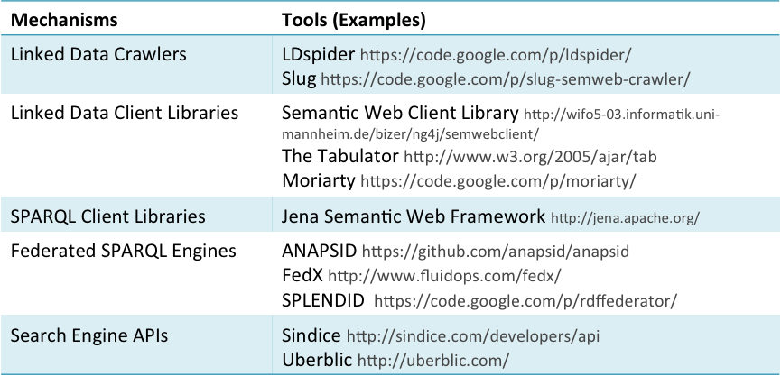

In the data tier new Linked Data may be consumed from a SPARQL endpoint in RDF. As discussed above, if the data is in another form such as CSV (Comma Separated Values) then a wrapper would be used to translate the data to RDF. Linked Data applications may implement a Mediator-Wrapper Architecture to access heterogeneous sources in which wrappers are built around each data source in order to provide an unified view of the retrieved data. The Mediator-Wrapper Architecture could be used with any of the three architectural patterns (i.e. crawling pattern, on-the-fly dereferencing pattern, federated query pattern). The most appropriate patterns will depend on a number of factors such as the number of sources that need top be accessed, how up-to-date the data is required to be and the speed of response required by the data layer.
A number of tools are available that can be used when implementing a data access component. Linked Data Crawlers are web crawlers designed to harvest RDF data. Linked Data client libraries support the access and traversal of Linked Data. SPARQL Client Libraries provide an API for accessing SPARQL endpoints. Federated SPARQL Engines provide a single access point for multiple heterogeneous data sources. Finally, Search Engine APIs such as Sindice (see chapter 4, section 10.2) support semantic searches that return RDF documents.

Figure 15: Linked Data access mechanisms.
The integrated dataset can then be kept in a local triplestore. A triplestore is required unless data is retrieved on-the-fly, and discarded just after building a response to the user request. A number of commercial or free RDF triplestores are available including OWLIM [14], Jena TDB [15], Cumulus [16], AllegroGraph [17], Virtuoso Universal Server [18] and RDF3x [19]. As described in Chapter 3, SPARQL endpoints and RDF dumps can be used to make RDF data available. As we will see later, data can also be made available via APIs or using functionality provided by your chosen application framework.